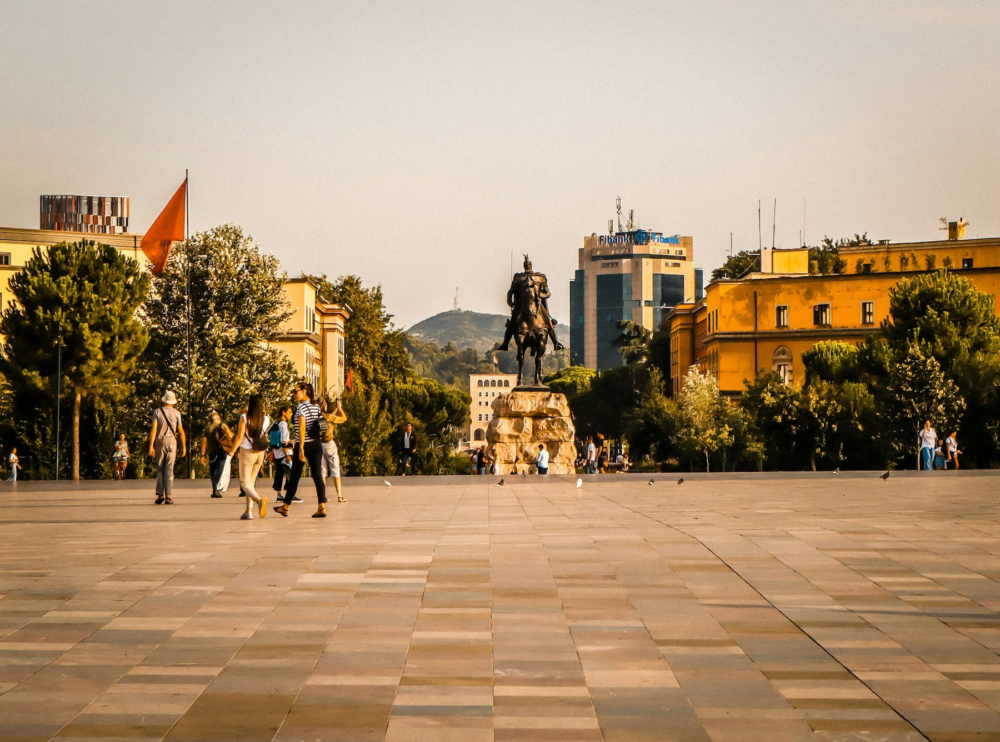
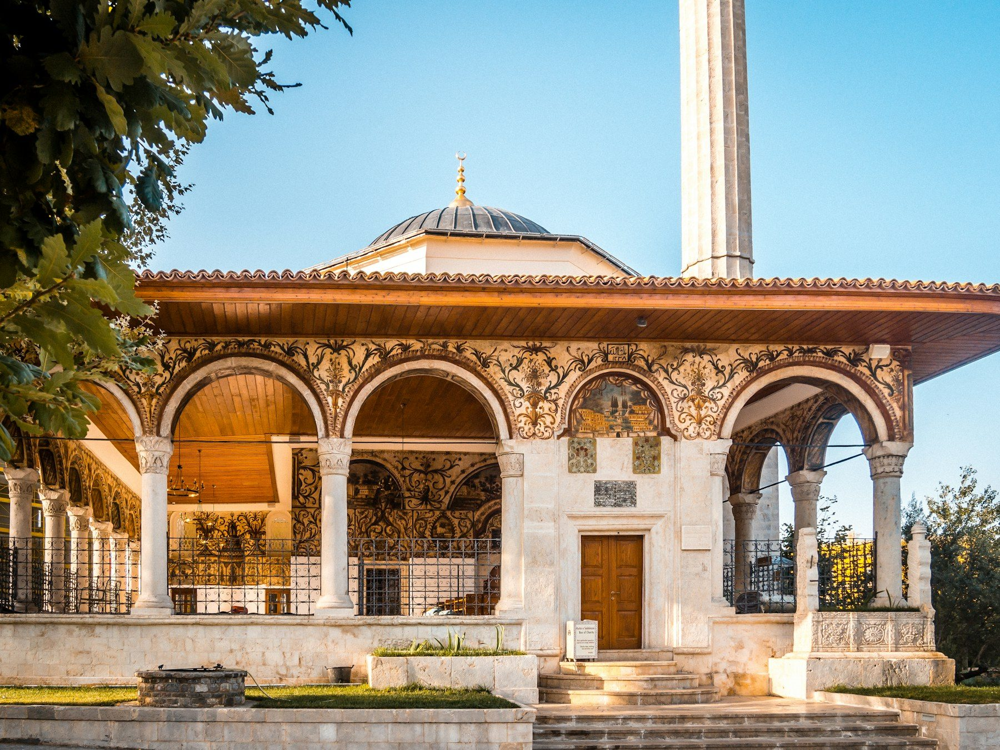
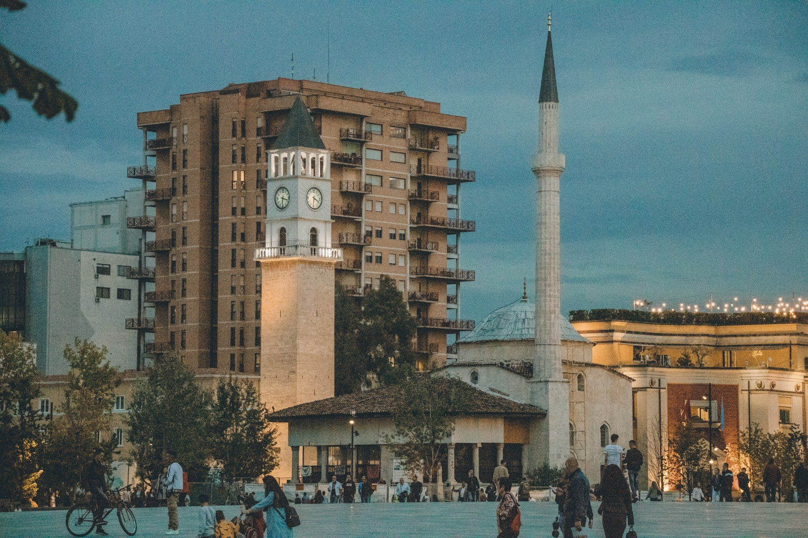
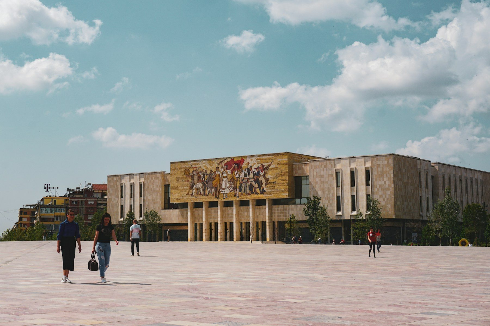

Marked on the map · 3 pins
Nicole's own pins from the map list — each opens straight in Google Maps.

No. 13 · Albania · Days 10–11 · bunkers, cable cars, and Blloku
Two nights in a loud, colourful capital that converted communism into cafés. Easy walking city, good food, cheap round.
Every Tirana walk starts at Skanderbeg Square, the vast paved plaza where the national hero sits on his horse and the whole city arranges itself around him. Across the square stands the Et'hem Bey mosque, survived every regime that frowned on it, its frescoes famously featuring a kind of scenery — willows, bridges — that mosque painting wasn't strictly supposed to include. Next to it, the clock tower keeps watch; climb it for the hour and the view.
By day the square is a space for children learning to ride bikes and old men conducting serious business on benches. By dusk it glows — and the clock tower against the evening sky is the postcard Tirana earns.


A short walk south, the Pyramid of Tirana — a very 1970s concrete lump built as a museum to Enver Hoxha, then variously a conference centre, a NATO base during the Kosovo war and a broadcast studio, and now reopened as a youth centre with glass ramps you are encouraged to climb. Go at sunset, per Nicole's pin: the city spreads out from the top, and the building's whole second life is that it stopped being a monument and became a place to sit.

The communist past here is not behind glass — it is the tourist industry. Pick exactly one bunker museum: Bunk'Art 2 is the compact central nuclear bunker five minutes off the square, while Bunk'Art 1 is the vast mountain-burrowed one out past the suburbs. Both are good; both together is a curfew.
For balance, ride the Dajti Express cable car fifteen minutes up the mountain that owns the skyline: panorama on the way, restaurants and short trails on top. And when the day cools, join the migration to Blloku — the neighbourhood that was once off-limits to everyone but the party elite, now the city's bar and dinner district, which is history's funniest punchline and the best table in town.
Nothing on this list is a chore; the fallback options — the Cloud pavilion, the National History Museum's mosaic of Illyrians, or honest café-hopping — are all pleasant.
Eat & drink: byrek for lunch, tavë kosi (baked lamb in yoghurt) for dinner, rooftop bars in Blloku after. Cash still useful; lek (ALL).Field note · Balkans 2027
Marked on the map · 3 pins
Nicole's own pins from the map list — each opens straight in Google Maps.
| No. | Pin | Open |
|---|---|---|
| 1 | Skanderbeg SquareThe big square — start any Tirana walk here. | Maps ↗ |
| 2 | Pyramid of Tirana"Go watch the sunset here." — climb the glass ramps on the Piramida. | Maps ↗ |
| 3 | Tirana Lake ParkThe Grand Park loop around the lake — the easy green afternoon. | Maps ↗ |